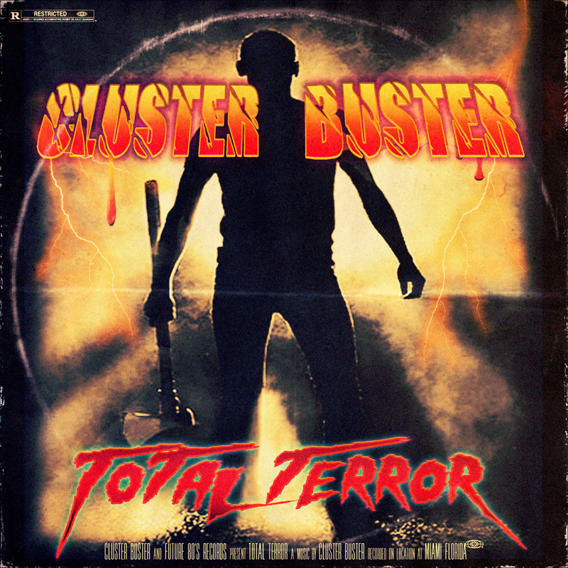
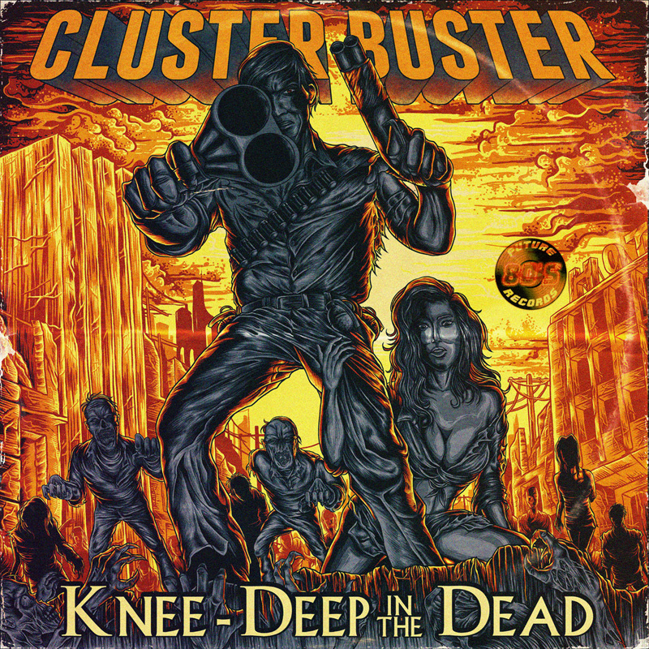
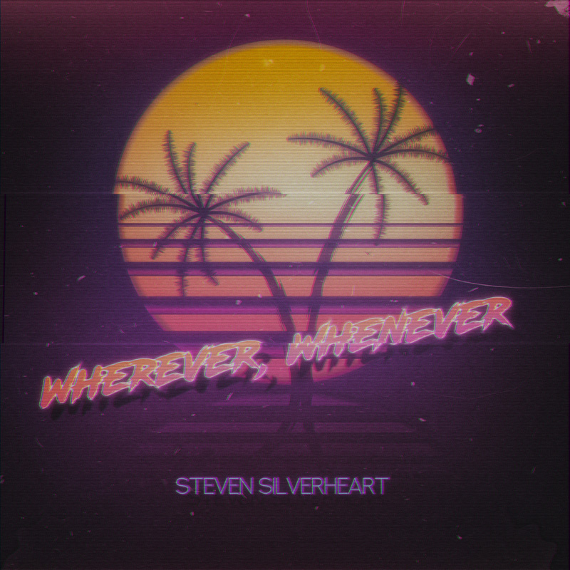

Who is Cluster Buster?
The name Cluster Buster was conjured from a whiskey-fueled creative music session.
In 2013 the first album They Call Her One eye was released, inspired
by a Swedish thriller going by the same name.
Throughout the existence of Cluster Buster, many different side projects have worked as a way to avoid losing inspiration and to keep the name fresh.
Steven Silverheart is one example of these side projects. Often these aliases
are very thematically different.
While the Cluster Buster theme is often dark, referencing old 80s horror flicks, the alias Orbitalo
has a space italo kind of sound, while Steven Silverheart's project focuses on feelgood italo dance.
The Music

Cluster Buster's music is mostly based on the horror synth and dark synth sub-genres. It is meant to give a sense of
immersion and is often used as background music for action packed horror scenes. The music is driven by a synthesizer,
backed up closely by drums and bass for the beat, and uses unique sound samples to add depth to the music. The sound
samples can vary from the sound of shotgun shells falling to zombie growls and violins. When listening to Cluster
Buster’s music one could imagine being in a heartpounding chase scene in a horror movie, or in a terrifying anxiety
riddled eventuality, and the music only adds more atmosphere to the situation.
Like most electronic based music, Cluster Buster's music starts out simplistic and low in intensity. Gradually
throughout the song it increases in intensity and complexity by introducing more instruments and unique sounds to
compliment the existing rhythm and feel. There is rarely any vocals in the songs, for the few exceptions the vocals are
used as sounds to enhance the song itself. The songs start out with 1 or 2 instruments or synthesized sounds. At even
intervals a new instrument is introduced to the song. The beginning is often bass or drums to set the rhythm then
followed by a synthesizer for the lead melody. Further into the song unique sounds are sometimes added to create
diversity and break repetition, like a growling zombie.
Artwork

The artwork for his songs compliment the music by portraying a scene. They are very illustrative based on the name and
atmosphere of the song, for example the song "Sexploitation". The song has an image of an undressed woman with a sultry
glance. As the name of the song implies, she is ready to exploit someone, sexually. The images' feel is then enchanted with the music playing in the
background. Another example would be for the song "High Incident Bandits" with an illustration of a man with a shotgun,
portaiting him as a bandit out to do mischief. The song connected to the illustration creates a vibe of underground
crime, which enhances the sense unlawfulness in the picture.
What is retrowave?
Retrowave is a genre of electronic music that emerged in the 2000s. The genre mimics the musical style of the
electronic synthesizer music that
originated in the late 1970s and early 1980s. The visual artwork of retrowave, or the aesthetic, is
considered to be almost as important as the music itself.
Retrowave romanticizes the nostalgia of movie- and video game soundtracks from the 1980s,
especially genres like action, science fiction, horror and slasher movies.
Retrowave music can be divided into subgenres like outrun, vaporwave, dreamwave, retro electro, italo disco,
darksynth, and others.
Musically, all the genres normally use characteristics from the 1980s like straight 4/4 beats, exaggeratedly loud
drum samples, and gated reverbs. The main rhythm, pads, and
melodies are created using synthesizers (or plugins that mimic the sound of a synthesizer). Synthwave isn’t
necessarily instrumental, but a majority of the music is without vocals, with synths performing the lead
melodies instead. Many artists also interpret more modern genres through retrowave, for example retrowave fused
with modern metal music, like Carpenter Brut
and Dance With the Dead.

A prime example of the most common recurring theme of the retrowave aesthetic is the image of a coastal city during
sunset, with palm trees in the background,
reminiscent of a warm summer day. This is dreamwave. VHS Dreams
is an artist that expresses their music using these visuals.
Then you have the outrun aesthetic, which usually features 1980s sports cars driving in the night, in a futuristic
city filled with neon lights. Kavinsky
is a good example of outrun music, especially the song "Nightcall".
Darksynth takes inspiration from slasher and horror movies like Day of the Dead, Friday the 13th, The Evil Dead,
specifically the "movie poster" type pictures of these films;
the artwork for Cluster Buster consist of images
like these. Contrasting to the gloomy and sinister atmosphere of darksynth, there are
italo disco or retro electro artists like Mirko Hirsch and Damokles.
The movie Drive from 2011 brought retrowave to the mainstream
with the main title theme "Nightcall" by Kavinsky gaining massive attention on the internet, through media
channels like Spotify and YouTube. The series Stranger Things
from 2016 embraces the 80s nostalgia, and also boosted the popularity of the genre, by having its soundtrack being
exclusively electronic music similar to retrowave.
Similar Artists
Vincenzo Salvia is an Italian producer and composer of several retrowave genres, like Italo disco, dreamwave, retro electro and outrun. Much of his work is inspired by 80s Italian culture; pool parties, sunny beaches, and summer love.
Kavinsky (Vincent Belorgey) is a French producer of outrun, who gained great mainstream recognition after "Nightcall" was featured in the 2011 movie "Drive". He grew up watching thousands of movies in the 80s which is his main inspiration for the music. Kavinsky is the alter ego created by Belorgey, who died in a car accident in 1986 and arose as a zombie, forever destined to drive down the streets in his Ferrari Testarossa.
Dance With the Dead is a duo from Orange County, California. Their music is best described as darksynth, and could be described as a fusion of retrowave and heavy metal. The visuals are inspired
by classic horror movies from the 1980s, and earlier decades.
Mitch Murder, real name Johan Bengtsson, is a Swedish musician who is regarded as one of the pioneers for retrowave. His music is described as outrun, or darksynth, or just retrowave in general,
depending on the album.
Miami Nights 1984 creates the perfect driving-in-the-night music with the soothing, gentle tones of dreamwave, combined with a
small hint of outrun, here on the album "Turbulence".
The funky retro electro sound of Damokles is a perfect homage to the more "cheesy" characteristics of 80s synthpop.